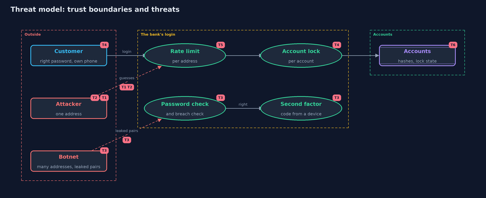

Threat Model — Password Attacks and Defences
A threat model answers four questions: what are we protecting, who or what could harm it, how, and what do we do about it. This one covers this project's own demo system, not a production deployment. Domain: an online bank.
Scope
The login of an online bank and the defences in front of it: the account lockout, the per-address rate limit, a second factor, a check against known breached passwords, and the messages the login returns. It covers guessing at the login page, not theft of the database and not how the password is stored.
What we protect (assets)
- Customers' accounts and the money behind them.
- The availability of login for the real customer.
- The secrecy of which usernames exist.
- The login service itself, which spends work on every attempt.
Who and what acts on the system
- Customers, with passwords of every strength, some reused from other sites.
- An attacker with one address, trying many passwords against one account.
- An attacker spraying a few common passwords across all accounts.
- A botnet using many addresses, with pairs leaked from another site.
Trust boundaries
A trust boundary is a line that data or a request crosses between parts that trust each other differently. Threats cluster where those lines are.
- Internet to login: where the per-address limit sits.
- Login to account: where the lock and the password check sit.
- Password to second factor: where a right password stops being enough.

Each dashed box is a trust boundary. A rose tag such as T1 shows where the threat of that number, in the table below, applies.
Threats, using STRIDE
STRIDE is a checklist of six kinds of threat: Spoofing (S), Tampering (T), Repudiation (R), Information disclosure (I), Denial of service (D), Elevation of privilege (E).
| Id | Kind | Threat | Where it shows up | Control in this project | What is left |
|---|---|---|---|---|---|
| T1 | Spoofing | A dictionary attack finds one account's password by trying many | Attacks.dictionary |
An account lock after 5 failures slows it from tick 13 to tick 33 | It is slowed, not stopped; a stronger password and a second factor are needed |
| T2 | Spoofing | Spraying takes accounts with common passwords without tripping any lock | Attacks.spray |
A rate limit per address slows the spray from 23 to 43 ticks | Four of ten accounts still fall; a breach check and a second factor help |
| T3 | Spoofing | Credential stuffing uses passwords reused from another site | Attacks.stuff |
A second factor, and a check of right passwords against known breaches | Customers must change their password or enrol a device, which costs them effort |
| T4 | Denial of service | An outsider locks a real customer out by failing on purpose | Bank.login with LockScope.ACCOUNT |
Lock each account-and-address pair instead | An attacker with many addresses gets more guesses: 10 addresses give 50 |
| T5 | Denial of service | A per-address limit blocks many honest customers behind one shared address | Bank.login rate limit |
None here | Real systems tune limits per context and add other signals |
| T6 | Information disclosure | Different messages reveal which usernames exist | Bank.login messages |
One message, "wrong username or password", for both cases | Timing and other differences can still reveal it; the messages are only the first step |
| T7 | Repudiation | Attacks go unnoticed because nobody looks at the failures | the whole login | None in this project | Logging failures per address and per account would show spraying as many accounts failing once |
Assumptions
- Passwords are stored as slow, salted hashes (see password-hashing).
- The attacker has no stolen database and no access to the customer's device.
- Addresses can be told apart. Many customers behind one shared address are a hazard for any per-address limit.
Out of scope
- Real networks, CAPTCHAs, device recognition and location signals.
- How one-time codes are made: the totp project covers that.
- Phishing, which defeats most of these defences by tricking the customer.
How the tests check this
BankTestchecks each defence on its own: locks and when they end, limits per window, second factor, breach check and messages.AttacksTestpins the numbers: tick 13, 33 and 23 for the dictionary attack, and 23 and 43 ticks for the spray.DemoRunsTestcompares the whole demo with the golden output.
Where this model goes next
The next project, totp-multi-factor, builds the second factor that act four relies on: a one-time code made from a shared secret and the time.